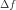
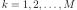
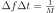

Estimation of a stationary covariance model¶
Let  be a multivariate
stationary normal process of dimension
be a multivariate
stationary normal process of dimension  . We only treat here
the case where the domain is of dimension 1:
. We only treat here
the case where the domain is of dimension 1:  (
( ).
If the process is continuous, then
).
If the process is continuous, then  . In the discrete
case,
. In the discrete
case,  is a lattice.
is a lattice.
 is supposed a second order process with zero mean. It is
entirely defined by its covariance function
,
defined by for all
.
In addition, we suppose that its spectral density function
is defined, where
is supposed a second order process with zero mean. It is
entirely defined by its covariance function
,
defined by for all
.
In addition, we suppose that its spectral density function
is defined, where
 is the set of
-dimensional positive definite hermitian matrices.
The objective is to estimate
is the set of
-dimensional positive definite hermitian matrices.
The objective is to estimate  from a
field or a sample of fields from the process , using first
the estimation of the spectral density function and then mapping
from a
field or a sample of fields from the process , using first
the estimation of the spectral density function and then mapping
 into using the inversion relation
(9), when it is possible.
As the mesh is a time grid (), the fields can be
interpreted as time series.
The estimation algorithm is outlined hereafter.
Let be the time grid on which the
process is observed and let also
be independent
realizations of or segments of one realization of
the process.
Using (9), the covariance function writes:
into using the inversion relation
(9), when it is possible.
As the mesh is a time grid (), the fields can be
interpreted as time series.
The estimation algorithm is outlined hereafter.
Let be the time grid on which the
process is observed and let also
be independent
realizations of or segments of one realization of
the process.
Using (9), the covariance function writes:
(1)¶
where  is the element
is the element  of the
matrix and the one of
. The integral (1) is approximated by its
evaluation on the finite domain :
of the
matrix and the one of
. The integral (1) is approximated by its
evaluation on the finite domain :
(2)¶
Let us consider the partition of the domain as follows:
is subdivided into segments
 = with
= with
 be the frequency step,
be the frequencies on which the spectral density is computed, with 
The equation (2) can be rewritten as:
We focus on the integral on each subdomain . Using numerical approximation, we have:
 must match with frequency values with
respect to the Shannon criteria. Thus the temporal domain of estimation
is the following:
must match with frequency values with
respect to the Shannon criteria. Thus the temporal domain of estimation
is the following:
is the time step, such as 
= is subdivided into segments
 =
with
=
with
be the time values on which the covariance is estimated,
The estimate of the covariance value at time value depends on the quantities of form:
(3)¶
We develop the expression of and and we get:
and:
We denote :
Finally, we get the following expression for integral in (3):
It follows that:
(4)¶
API:
See
WelchFactorySee
Hann
Examples: